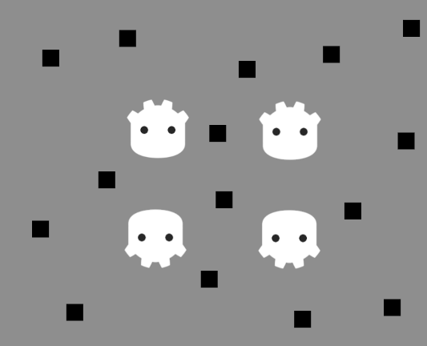
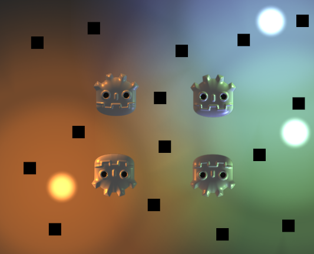
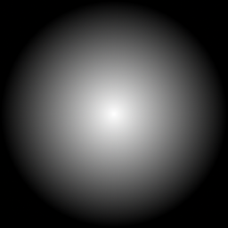
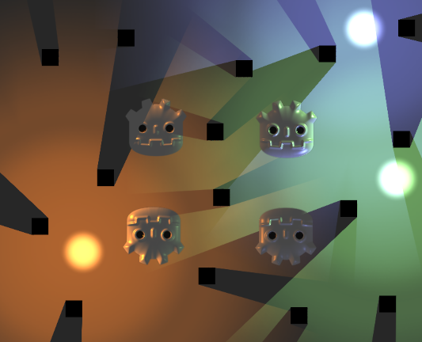
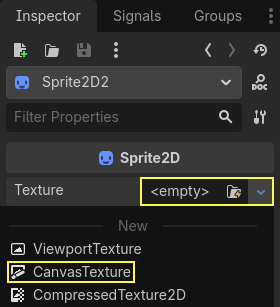

Ánh sáng và bóng đổ 2D
Giới thiệu
Theo mặc định, các scene 2D trong Godot không được tô bóng (unshaded), không có ánh sáng và bóng đổ. Dù kết xuất nhanh, scene không tô bóng có thể trông nhạt nhẽo. Godot cung cấp khả năng dùng ánh sáng và bóng đổ 2D theo thời gian thực, giúp tăng đáng kể cảm giác chiều sâu cho dự án của bạn.

Không có ánh sáng hay bóng đổ 2D, scene không được tô bóng

Đã bật ánh sáng 2D (không có bóng đổ)
Đã bật ánh sáng và bóng đổ 2D
Node
Một thiết lập chiếu sáng 2D hoàn chỉnh gồm có một số node:
CanvasModulate (để làm tối phần còn lại của scene)
PointLight2D (cho đèn đa hướng hoặc đèn chiếu)
DirectionalLight2D (cho ánh sáng mặt trời hoặc ánh trăng)
LightOccluder2D (cho các vật thể đổ bóng)
Các node 2D khác nhận ánh sáng, chẳng hạn Sprite2D hoặc TileMapLayer.
CanvasModulate được dùng để làm tối scene bằng cách chỉ định một màu đóng vai trò màu "môi trường" (ambient) cơ bản. Đây là màu chiếu sáng cuối cùng ở những vùng không được bất kỳ đèn 2D nào chiếu tới. Nếu không có node CanvasModulate, scene cuối cùng sẽ trông quá sáng, vì đèn 2D chỉ làm sáng thêm vẻ ngoài không tô bóng sẵn có (vốn trông như được chiếu sáng hoàn toàn).
Các Sprite2D được dùng để hiển thị texture cho các đốm sáng, nền, và cho các vật thể đổ bóng.
Các PointLight2D được dùng để chiếu sáng scene. Cách một đèn thường hoạt động là thêm một texture được chọn lên trên phần còn lại của scene để mô phỏng ánh sáng.
Các LightOccluder2D được dùng để cho shader biết phần nào của scene đổ bóng. Các occluder này có thể được đặt dưới dạng node độc lập hoặc là một phần của node TileMapLayer.
Bóng đổ chỉ xuất hiện ở những vùng được PointLight2D bao phủ, và hướng của chúng dựa trên tâm của đèn.
Ghi chú
Màu nền không nhận bất kỳ ánh sáng nào. Nếu bạn muốn ánh sáng chiếu lên nền, bạn cần thêm một thành phần hiển thị cho nền, chẳng hạn một Sprite2D.
Các thuộc tính Region của Sprite2D có thể giúp nhanh chóng tạo một texture nền lặp lại, nhưng hãy nhớ đặt cả Texture > Repeat thành Enabled trong thuộc tính của Sprite2D.
Đèn điểm
Đèn điểm (còn gọi là đèn định vị) là thành phần phổ biến nhất trong chiếu sáng 2D. Đèn điểm có thể dùng để biểu thị ánh sáng từ đuốc, lửa, đạn bắn, v.v.
PointLight2D cung cấp các thuộc tính sau để tinh chỉnh trong Inspector:
Texture: Texture dùng làm nguồn sáng. Kích thước của texture quyết định kích thước của đèn. Texture có thể có kênh alpha, điều này hữu ích khi dùng chế độ hòa trộn Mix của Light2D, nhưng không bắt buộc nếu dùng chế độ hòa trộn Add (mặc định) hoặc Subtract.
Offset: Độ lệch cho texture của đèn. Khác với khi bạn di chuyển node đèn, việc thay đổi offset không làm bóng đổ di chuyển.
Texture Scale: Hệ số nhân cho kích thước của đèn. Giá trị càng cao, ánh sáng càng lan ra xa. Đèn lớn hơn tốn nhiều hiệu năng hơn vì chúng ảnh hưởng đến nhiều pixel trên màn hình hơn, vì vậy hãy cân nhắc điều này trước khi tăng kích thước đèn.
Height: Chiều cao ảo của đèn liên quan đến normal mapping. Theo mặc định, đèn ở rất gần các bề mặt nhận ánh sáng. Điều này khiến ánh sáng khó thấy nếu dùng normal mapping, vì vậy hãy cân nhắc tăng giá trị này. Việc điều chỉnh chiều cao của đèn chỉ tạo ra khác biệt thấy được trên các bề mặt dùng normal mapping.
Nếu bạn không có sẵn texture để dùng cho đèn, bạn có thể dùng texture đèn điểm "trung tính" này (nhấp chuột phải > Save Image As…):

Texture đèn điểm trung tính
Nếu bạn cần kiểu suy giảm (falloff) khác, bạn có thể tạo texture theo cách thủ tục bằng cách gán một New GradientTexture2D cho thuộc tính Texture của đèn. Sau khi tạo resource, mở rộng mục Fill của nó và đặt chế độ tô thành Radial. Sau đó, bạn cần điều chỉnh gradient để đi từ màu trắng đục sang màu trắng trong suốt, và di chuyển vị trí bắt đầu của nó vào giữa.
Đèn định hướng
Chiếu sáng định hướng được dùng để biểu thị ánh sáng mặt trời hoặc ánh trăng. Các tia sáng được chiếu song song với nhau, như thể mặt trời hoặc mặt trăng ở xa vô tận so với bề mặt nhận ánh sáng.
DirectionalLight2D có các thuộc tính sau:
Height: Chiều cao ảo của đèn liên quan đến normal mapping (
0.0= song song với bề mặt,1.0= vuông góc với bề mặt). Theo mặc định, đèn hoàn toàn song song với các bề mặt nhận ánh sáng. Điều này khiến ánh sáng khó thấy nếu dùng normal mapping, vì vậy hãy cân nhắc tăng giá trị này. Việc điều chỉnh chiều cao của đèn chỉ tạo ra khác biệt về hình ảnh trên các bề mặt dùng normal mapping. Height không ảnh hưởng đến vẻ ngoài của bóng đổ.Max Distance: Khoảng cách tối đa (tính bằng pixel) từ tâm camera mà đối tượng có thể ở trước khi bóng đổ của chúng bị loại bỏ (cull). Giảm giá trị này có thể ngăn các đối tượng nằm ngoài camera đổ bóng (đồng thời cải thiện hiệu năng). Max Distance không tính đến mức zoom của Camera2D, nghĩa là ở các mức zoom cao hơn, bóng đổ sẽ có vẻ mờ dần sớm hơn khi phóng to vào một điểm nhất định.
Ghi chú
Bóng đổ từ ánh sáng định hướng sẽ luôn trông dài vô hạn, bất kể giá trị của thuộc tính Height. Đây là hạn chế của phương pháp kết xuất bóng đổ dùng cho ánh sáng 2D trong Godot.
Để có bóng đổ định hướng không dài vô hạn, bạn nên tắt bóng đổ trong DirectionalLight2D và thay vào đó dùng một shader tùy chỉnh đọc từ signed distance field 2D. Distance field này được tạo tự động từ các node LightOccluder2D có trong scene.
Các thuộc tính chung của đèn
Cả PointLight2D và DirectionalLight2D đều có các thuộc tính chung, thuộc về lớp cơ sở Light2D:
Enabled: Cho phép bật/tắt hiển thị của nguồn sáng. Khác với việc ẩn node ánh sáng, tắt thuộc tính này sẽ không ẩn các node con của nguồn sáng.
Editor Only: Nếu bật, nguồn sáng chỉ hiển thị trong trình chỉnh sửa. Nó sẽ tự động bị tắt khi chạy dự án.
Color: Màu của nguồn sáng.
Energy: Hệ số nhân cường độ của nguồn sáng. Giá trị càng cao thì ánh sáng càng sáng.
Blend Mode: Công thức pha trộn dùng cho tính toán ánh sáng. Giá trị mặc định Add phù hợp với hầu hết trường hợp. Subtract có thể dùng cho ánh sáng âm, vốn không chính xác về mặt vật lý nhưng có thể dùng cho hiệu ứng đặc biệt. Chế độ pha trộn Mix trộn giá trị các pixel tương ứng với texture của nguồn sáng với giá trị các pixel bên dưới bằng nội suy tuyến tính.
Range > Z Min: Z index thấp nhất chịu ảnh hưởng của nguồn sáng.
Range > Z Max: Z index cao nhất chịu ảnh hưởng của nguồn sáng.
Range > Layer Min: Visual layer thấp nhất chịu ảnh hưởng của nguồn sáng.
Range > Layer Max: Visual layer cao nhất chịu ảnh hưởng của nguồn sáng.
Range > Item Cull Mask: Kiểm soát những node nào nhận ánh sáng từ node này, tùy theo các visual layer được bật trong Occluder Light Mask của các node khác. Có thể dùng để ngăn một số đối tượng nhận ánh sáng.
Thiết lập bóng đổ
Sau khi bật thuộc tính Shadow > Enabled trên node PointLight2D hoặc DirectionalLight2D, ban đầu bạn sẽ không thấy khác biệt gì về hình ảnh. Đó là vì chưa có node nào trong scene có occluder, vốn là cơ sở để đổ bóng.
Để bóng đổ xuất hiện trong scene, bạn phải thêm các node LightOccluder2D vào scene. Các node này cũng phải có polygon occluder được thiết kế khớp với đường viền của sprite.
Ngoài resource polygon (phải được thiết lập thì mới có hiệu ứng hình ảnh), node LightOccluder2D có 2 thuộc tính:
SDF Collision: Nếu bật, occluder sẽ là một phần của signed distance field được tạo theo thời gian thực, có thể dùng trong shader tùy chỉnh. Khi không dùng shader tùy chỉnh đọc từ SDF này, việc bật thuộc tính không tạo khác biệt về hình ảnh và không tốn hiệu năng, nên nó được bật mặc định cho tiện.
Occluder Light Mask: Thuộc tính này được dùng kết hợp với thuộc tính Shadow > Item Cull Mask của PointLight2D và DirectionalLight2D để kiểm soát những đối tượng nào đổ bóng với từng nguồn sáng. Có thể dùng để ngăn các đối tượng cụ thể đổ bóng.
Có hai cách để tạo vật che sáng (light occluder):
Tự động tạo light occluder
Có thể tạo occluder tự động từ node Sprite2D bằng cách chọn node, nhấp vào menu Sprite2D ở phía trên trình chỉnh sửa 2D rồi chọn Create LightOccluder2D Sibling.
Trong hộp thoại xuất hiện, một đường viền sẽ bao quanh các cạnh của sprite. Nếu đường viền khớp sát với các cạnh của sprite, bạn có thể nhấp OK. Nếu đường viền cách quá xa các cạnh của sprite (hoặc "ăn" vào các cạnh của sprite), hãy điều chỉnh Grow (pixels) và Shrink (pixels), rồi nhấp Update Preview. Lặp lại thao tác này cho đến khi đạt kết quả ưng ý.
Vẽ light occluder thủ công
Tạo một node LightOccluder2D, sau đó chọn node và nhấp nút "+" ở phía trên trình chỉnh sửa 2D. Khi được hỏi có tạo resource polygon không, hãy trả lời Yes. Sau đó bạn có thể bắt đầu vẽ polygon occluder bằng cách nhấp để tạo điểm mới. Bạn có thể xóa điểm có sẵn bằng cách nhấp chuột phải vào chúng, và tạo điểm mới từ đường có sẵn bằng cách nhấp vào đường rồi kéo.
Có thể điều chỉnh các thuộc tính sau trên nguồn sáng 2D đã bật bóng đổ:
Color: Màu của vùng bị che bóng. Mặc định, vùng bị che bóng có màu đen hoàn toàn, nhưng bạn có thể thay đổi vì mục đích nghệ thuật. Kênh alpha của màu kiểm soát mức độ bóng đổ được nhuộm bởi màu đã chỉ định.
Filter: Chế độ lọc dùng cho bóng đổ. Giá trị mặc định None kết xuất nhanh nhất và rất phù hợp với game có phong cách pixel art (do hình ảnh "vuông vức"). Nếu muốn bóng đổ mềm, hãy dùng PCF5. PCF13 còn mềm hơn nữa nhưng tốn tài nguyên kết xuất nhất. Chỉ nên dùng PCF13 cho vài nguồn sáng cùng lúc do chi phí kết xuất cao.
Filter Smooth: Kiểm soát mức độ làm mềm bóng đổ khi Filter được đặt thành PCF5 hoặc PCF13. Giá trị cao hơn cho bóng đổ mềm hơn, nhưng có thể khiến lỗi hình ảnh dạng dải (banding) xuất hiện (nhất là với PCF5).
Item Cull Mask: Kiểm soát những node LightOccluder2D nào đổ bóng, tùy theo thuộc tính Occluder Light Mask tương ứng của chúng.
Ghi chú
Độ phân giải chiếu sáng và bóng đổ trong game pixel art
Engine tính toán chiếu sáng và bóng đổ 2D ở độ phân giải pixel của Viewport, không phải ở độ phân giải texel của texture gốc. Diện mạo của ánh sáng và bóng đổ phụ thuộc vào độ phân giải cửa sổ hoặc Viewport, không phụ thuộc vào độ phân giải của từng texture sprite.
Nếu bạn làm game pixel art và muốn ánh sáng, bóng đổ có dạng pixel hoặc vuông vức khớp với phong cách đồ họa, lọc texture Nearest sẽ không đạt được hiệu ứng này. Lọc Nearest chỉ ảnh hưởng đến cách engine lấy mẫu texture — nó không thay đổi cách engine kết xuất ánh sáng và bóng đổ.
Để có ánh sáng và bóng đổ dạng pixel, hãy dùng shader tùy chỉnh để sửa LIGHT_VERTEX và SHADOW_VERTEX nhằm bám việc lấy mẫu ánh sáng theo lưới pixel. Shader sau bám ánh sáng theo lưới bằng hàm floor():
shader_type canvas_item;
uniform float pixel_size = 4.0;
void fragment() {
// Snap lighting and shadows to pixel grid.
LIGHT_VERTEX.xy = floor(LIGHT_VERTEX.xy / pixel_size) * pixel_size;
SHADOW_VERTEX = floor(SHADOW_VERTEX / pixel_size) * pixel_size;
// Normal rendering.
COLOR = texture(TEXTURE, UV);
}
Cách này hoạt động bằng cách chia vị trí cho pixel_size để chuyển sang không gian lưới, dùng floor() để làm tròn xuống điểm lưới gần nhất, rồi nhân trở lại để chuyển về không gian màn hình. Kết quả là engine buộc phải lấy mẫu ánh sáng từ các vị trí lưới rời rạc, tạo ra hiệu ứng pixel.
Để biết thêm về shader canvas item, xem Shader CanvasItem.

Bóng đổ cứng
Bóng đổ mềm (PCF13, Filter Smooth 1.5)
Bóng đổ mềm có lỗi vệt sọc do Filter Smooth quá cao (PCF5, Filter Smooth 4)
Normal map và specular map
Normal map và specular map có thể tăng đáng kể cảm giác chiều sâu cho chiếu sáng 2D. Tương tự cách chúng hoạt động trong kết xuất 3D, normal map giúp ánh sáng trông bớt phẳng bằng cách thay đổi cường độ tùy theo hướng của bề mặt nhận sáng (trên từng pixel). Specular map giúp cải thiện hình ảnh hơn nữa bằng cách khiến một phần ánh sáng phản xạ ngược về phía người xem.
Cả PointLight2D và DirectionalLight2D đều hỗ trợ normal mapping và specular mapping. Normal map và specular map có thể gán cho bất kỳ phần tử 2D nào, kể cả các node kế thừa từ Node2D hoặc Control.
Normal map biểu diễn hướng mà mỗi pixel đang "chỉ" tới. Engine dùng thông tin này để áp dụng chiếu sáng chính xác lên các bề mặt 2D theo cách hợp lý về mặt vật lý. Normal map thường được tạo từ height map vẽ tay, nhưng cũng có thể được tạo tự động từ các texture khác.
Specular map xác định mức độ mỗi pixel phản xạ ánh sáng (và với màu gì, nếu specular map có chứa màu). Giá trị sáng hơn sẽ cho phản xạ sáng hơn tại điểm đó trên texture. Specular map thường được tạo bằng chỉnh sửa thủ công, dùng diffuse texture làm cơ sở.
Mẹo
Nếu chưa có normal map hoặc specular map cho sprite, bạn có thể tạo chúng bằng công cụ miễn phí, mã nguồn mở Laigter.
Để thiết lập normal map và/hoặc specular map trên một node 2D, hãy tạo một resource CanvasTexture mới cho thuộc tính vẽ texture của node. Ví dụ, trên Sprite2D:

Tạo resource CanvasTexture cho node Sprite2D
Mở rộng resource vừa tạo. Bạn sẽ thấy một số thuộc tính cần điều chỉnh:
Diffuse > Texture: Texture màu cơ sở. Trong thuộc tính này, hãy nạp texture bạn đang dùng cho chính sprite.
Normal Map > Texture: Texture normal map. Trong thuộc tính này, hãy nạp texture normal map bạn đã tạo từ height map (xem mẹo ở trên).
Specular > Texture: Texture specular map, kiểm soát cường độ specular của từng pixel trên diffuse texture. Specular map thường là ảnh thang xám, nhưng cũng có thể chứa màu để nhân màu của phản xạ tương ứng. Trong thuộc tính này, hãy nạp texture specular map bạn đã tạo (xem mẹo ở trên).
Specular > Color: Hệ số nhân màu cho phản xạ specular.
Specular > Shininess: Số mũ specular dùng cho phản xạ. Giá trị thấp hơn sẽ tăng độ sáng của phản xạ và làm chúng lan tỏa hơn, còn giá trị cao hơn sẽ khiến phản xạ tập trung hơn. Giá trị cao phù hợp hơn cho các bề mặt trông ẩm ướt.
Texture > Filter: Có thể đặt để ghi đè chế độ lọc texture, bất kể thuộc tính của node được đặt thế nào (hoặc cài đặt dự án Rendering > Textures > Canvas Textures > Default Texture Filter).
Texture > Repeat: Có thể đặt để ghi đè chế độ lọc texture, bất kể thuộc tính của node được đặt thế nào (hoặc cài đặt dự án Rendering > Textures > Canvas Textures > Default Texture Repeat).
Sau khi bật normal mapping, bạn có thể nhận thấy nguồn sáng có vẻ yếu hơn. Để khắc phục, hãy tăng thuộc tính Height trên các node PointLight2D và DirectionalLight2D. Bạn cũng có thể tăng nhẹ thuộc tính Energy của nguồn sáng để gần với cường độ chiếu sáng trước khi bật normal mapping.
Dùng sprite additive làm giải pháp thay thế nhanh hơn cho ánh sáng 2D
Nếu gặp vấn đề hiệu năng khi dùng ánh sáng 2D, bạn có thể cân nhắc thay một số nguồn sáng bằng node Sprite2D dùng pha trộn additive. Cách này đặc biệt phù hợp với các hiệu ứng động tồn tại ngắn, như đạn hoặc vụ nổ.
Sprite additive kết xuất nhanh hơn nhiều vì chúng không phải đi qua một pipeline kết xuất riêng. Ngoài ra, có thể dùng cách này với AnimatedSprite2D (hoặc Sprite2D + AnimationPlayer), cho phép tạo "ánh sáng" 2D có hoạt ảnh.
Tuy nhiên, sprite additive có một vài nhược điểm so với ánh sáng 2D:
Công thức pha trộn không chính xác so với chiếu sáng 2D "thực sự". Điều này thường không thành vấn đề ở những vùng đủ sáng, nhưng khiến sprite additive không thể chiếu sáng đúng các vùng tối hoàn toàn.
Sprite additive không thể đổ bóng, vì chúng không phải nguồn sáng.
Sprite additive bỏ qua normal map và specular map dùng trên các sprite khác.
Để hiển thị sprite với pha trộn additive, hãy tạo node Sprite2D và gán texture cho nó. Trong Inspector, cuộn xuống mục CanvasItem > Material, mở rộng nó và nhấp vào danh sách thả xuống cạnh thuộc tính Material. Chọn New CanvasItemMaterial, nhấp vào material vừa tạo để chỉnh sửa, rồi đặt Blend Mode thành Add.